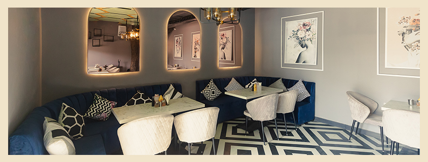

<div fxLayout="column" fxLayoutAlign="center center" fxLayoutGap="30px" style=" margin-top: 110px;" >
<mat-card>
  
  <mat-card-title class="m-16-06">This Stunning Open-Air Restaurant In South Delhi Is The Perfect Place To Beat The Heat</mat-card-title>
  <mat-card-subtitle class="m-16-06">4th May 2022/by Mohana Chakraborty</mat-card-subtitle>
  <mat-card-content class="m-16-06">
    <p>Summers and open-air setups have a longstanding bond that still hasn’t been swayed by the wind. If you have been looking for a breezy romantic setup in the heart of South Delhi, The Sky Lantern is the place to be!</p>
    <h2>A Look Around</h2>
    <p>Built around a humongous, larger than life space, this place is perfect for chill casual outings, chance encounters, romantic dinner dates, or some me-time. The minimal choice of décor, and the generosity of open space at Sky Lantern makes it an ideal chill zone. Also, this place hosts some of the most amazing musical evenings from time to time so that you can come and add colours to your dining experience.</p>
  
  </mat-card-content>


</mat-card>

</div>
